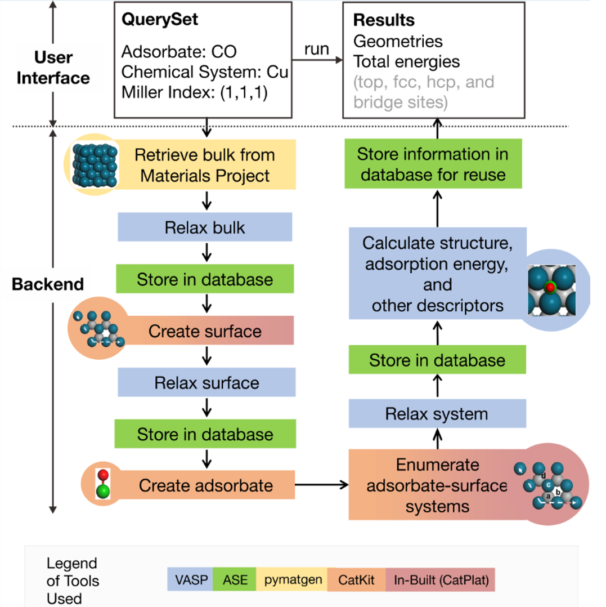
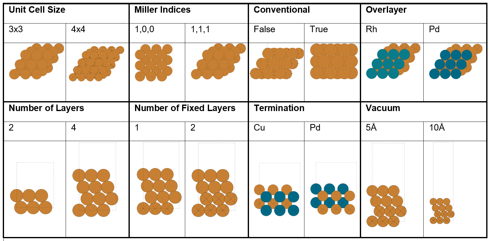
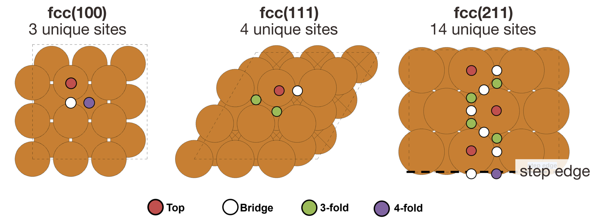
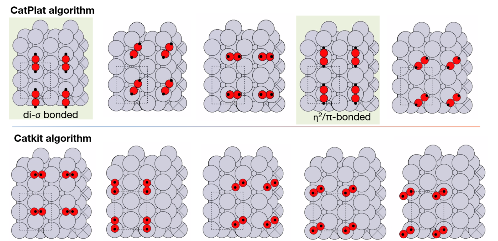

About
1. Introduction
CatPlat is a python package developed by researchers from A*STAR’s Institue of High Performance Computing (IHPC) that automates High Throughput Screening (HTS) workflows for hetogeneous catalysis. Catplat is equipped with database functionalities for easy retrieval of calculated data.
2. Why CatPlat?
In computational heterogeneous catalysis, understanding a catalytic reaction and proposing novel catalysts requires a bottom-up understanding of how the bonds of individual atoms and molecules break and form on catalyst surfaces. The field has therefore benefitted tremendously from the advent of computing and the associated development of a wide variety of computational software.
However, correctly setting up these computations and analyses remains a tedious task requiring knowledge of many different computational chemistry and materials codes developed by different groups, such as ASE, VASP, pymatgen, CatKit and Avogadro. The need to employ a wide variety of codes greatly impacts the productivity of the researcher, as well as the throughput and reliability of the calculations. The researcher must first undergo an immense amount of training and practice to learn how to use the codes. The researcher must then go through a manual, time-consuming series of workflows thereafter to obtain the desired results. Furthermore, these calculations are prone to human errors.
3. Workflow Overview
{kind=link}
Figure 1: User interface and backend of the CatPlat platform. An example of CO binding on Cu(111) is shown. The legend shows the different material codes used in the backend.
Figure 1. User interface and backend of the CatPlat platform. An example of CO binding on Cu(111) is shown. The legend shows the different material codes used in the backend. Figure 1 provides an overview of how our platform works. The user interface is designed to be simple to use for users with minimal knowledge of python. Users may also submit queries through the command line interface. The simple and intuitive user interface is powered by a complex backend, where multiple workflows are being constructed to obtain the desired calculation results such as relaxed geometries and total energies.
3.1 Bulk Workflow
The bulk workflow handles the creation and optimisation of bulk structures. Bulk structures may be supplied by the user or obtained through the Materials Project Application Programming Interface (MAPI).
3.2 Slab Workflow
The slab workflow handles the creation and optimisation of slab structures. Similarly, slab structures may be directly provided by the user, or generated from bulk structures. The slab building algorithm implemented CatPlat has been finetuned to be more robust in handling systems with different spacegroups as well as non-ideal systems in comparison to other packages such as CatKit.
{kind=link}
Figure 2: Attributes that can be adjusted for the slab building process and atomistic illustrations of the resulting slabs. Dotted lines mark the unit cell, and crosses in atoms mark fixed atoms. Colour code for atoms: orange - Cu, dark blue - Pd, dark green - Rh.
CatPlat offers a wide degree of control for users to construct their slabs according to their research requirements. Figure 2 shows the effects of the different slab attributes on the resulting structures.
3.3 Adsorbate Workflow
The Adsorbate Workflow handles the creation and optimisation of slab-adsorbate complex structures. Initial guesses of the adsorbate binding geometries on a given slab are obtained by enumerating the unique sites on the surface and adsorbing the specified adsorbate on the slabs on the sites (Figure 3).
{kind=link}
Figure 3: Top view of the unique adsorption sites on different fcc surfaces. The fcc(100), fcc(111), and fcc(211) surfaces have 3, 4, and 14 unique adsorption sites, respectively. These unique adsorption sites are automatically enumerated through surface and symmetry analysis.
To ensure a more robust creation of initial adsorbate binding geometries, we developed our own adsorbate placement algorithm, in-built to CatPlat. Our algorithm handles the adsorption of both monodentate and bidentate species.
4. Improved Algorithms
{kind=link}
Figure 4: Application of the CatPlat binding algorithm to the adsorption of O2 on Pt(111). The CatPlat algorithm was able to obtain the two configurations identified to be stable from DFT calculations, marked in green boxes. On the other hand, the CatKit algorithm was unable to do so. Dotted lines mark the unit cell, whereas black dots are markers of the selected sites for adsorption. Colour code for atoms: grey - Ag, red - O.
We tested the ability of our algorithm to handle bidentate adsorption with a simple adsorbate: O2. Compared to the catkit algorithm, our algorithm generated more reasonable initial structures for the adsorption of O2 , such as the di–σ binding and η2/π-bonding configurations (Figure 4, light green boxes), that are known to be stable in the literature, whereas CatKit did not manage to find either configuration.
5. Conclusion
Overall, CatPlat is a one-stop solution for users to execute heterogeneous catalysis workflows, without manual intervention or knowledge of the complex structural manipulations required to perform these calculations. Additionally, it improves upon the deficiencies of the existing codes whenever required so that the calculation inputs can be more accurately constructed, which are imperative for obtaining accurate results. Therefore, we envision CatPlat to be a critical enabler of high throughput investigations of heterogeneous catalysis reactions, as well as for rational catalyst screening and design.
6. Acknowledgements
This work is supported by the Accelerated Catalyst Development (A19E9a0103) grant.
Authors: Benjamin Chen, Chryston Boo, Kabiraj Arnab, Zhang Jia, Michael B. Sullivan.
Correspondence: benjamin_chen@ihpc.a-star.edu.sg, chryston_boo@ihpc.a-star.edu.sg
Technical Disclosure: IHPC-TD-MSC-2022-037